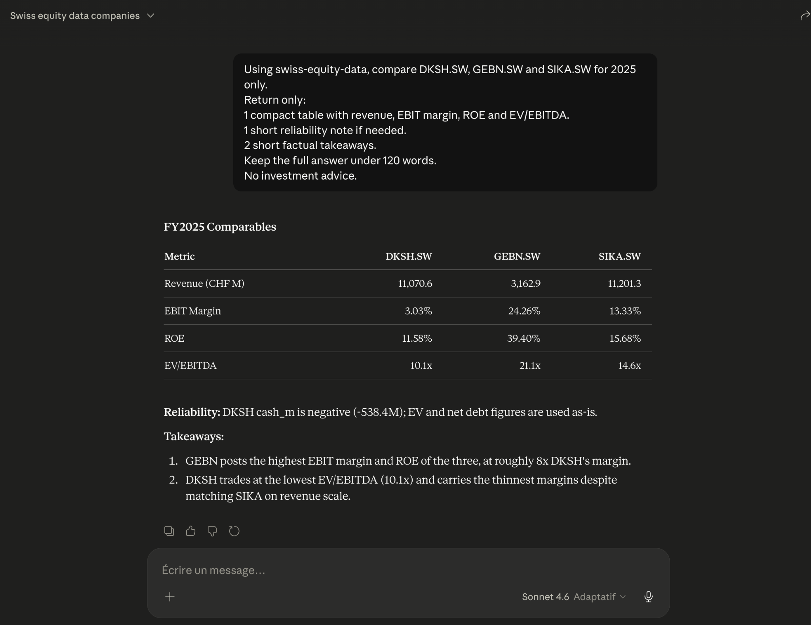

Swiss Equity Data is building a structured data layer for Swiss listed companies, combining validated annual fundamentals, quality checks, documented limitations, Excel/CSV exports and controlled API/MCP access. The public beta is live, with progressive expansion toward broader Swiss equity coverage.
The gap is especially visible outside the mega caps: mid/small caps require manual collection, cleaning, normalization and quality checks before they can be used in Excel, Python or valuation workflows.
Every listed company publishes PDFs in a different format, in German, French or English. No unified source. No consistent structure.
Free or low-cost data tools can be useful for exploration, but they often come with coverage gaps, rate limits, reliability issues or redistribution constraints that make them fragile for recurring professional workflows.
For many Swiss listed companies, especially outside the largest names, the issue is not only access to figures. The hard part is turning scattered reports, labels and formats into comparable, reusable datasets.
Large market data platforms serve professional institutions well, but they are often too broad, too expensive or too complex for smaller teams that mainly need clean Swiss fundamentals and exportable comparables.
Annual fundamentals, ratios and export-ready datasets for Swiss listed companies.
Source tracking, field-level provenance, missing-field visibility, consistency checks and documented limitations.
Ratios, margins, growth, historical views and comparables. Descriptive analytics only.
Roadmap access layer for querying the validated dataset from Python, Claude, Cursor or other AI-assisted workflows through controlled functions.
Quality is not an add-on. The dataset is designed around source tracking, field-level provenance, documented limitations and release validation. Annual reports are used as validation sources where available, so users can understand where the numbers come from and which fields require caution.
Validated Annual Data Packs are suited for users who want structured Excel/CSV datasets. MCP/API access is intended for recurring workflows where users query a maintained dataset from Python or AI-assisted tools.
Web interface, validated annual fundamentals, ratios, quality notes, documented limitations and Excel/CSV exports.
Validated Annual Data Packs, broader Swiss listed equity coverage, annual report validation, Python API and controlled MCP access.
The long-term target is around 220 Swiss listed companies, with a particular focus on mid/small caps where structured and traceable fundamentals are harder to obtain.
Public beta live. Validated data packs available on request. Progressive expansion in progress.
The MCP layer is designed to make Swiss Equity Data queryable from AI-assisted workflows without letting the model invent financial data. The assistant queries controlled functions on top of a structured, quality-checked dataset.
Controlled MCP/API access is a roadmap layer for recurring research, valuation, data quality and reporting workflows. It is designed to expose the same maintained dataset through explicit functions, rather than turn the product into a stock-picking chatbot.

The public beta lets users explore a selected universe of Swiss listed companies online. A broader validated data pack is available on request, with Excel/CSV exports, ratios, quality notes, documented limitations and field-level provenance.
Explore selected Swiss listed companies in the public beta
Validated annual fundamentals, up to 10 years of data
Quality checks and documented limitations per company
Calculated ratios, margins and comparable views
Export-ready structured datasets
Field-level provenance and source references
Missing fields and caveats explicitly documented
Roadmap access layer for AI-assisted workflows via controlled functions
Asset managers who want to screen, compare and monitor Swiss listed companies without rebuilding their own data pipeline.
Corporate finance, M&A and valuation teams that need clean, exportable and documented Swiss listed comparables for analysis and valuation work.
Analysts, newsletters and data-finance writers who need clean numbers, charts and exports on Swiss listed companies.
Developers, fintech builders and AI workflow builders who need structured Swiss equity data as a reliable input layer.
Not a stock-picking tool. No buy/sell recommendations. No personalized investment advice. No price predictions. Not a Bloomberg replacement. Not a final vendor-grade institutional database yet. Broader Swiss equity coverage and controlled API/MCP access remain roadmap items.
Open-source Python package published on PyPI, covering Swiss macro and market data. It has generated organic interest from finance professors and fintech developers, and serves as the technical foundation for this broader Swiss financial data project.
Swiss Equity Data now has a public beta and validated data packs available on request. The focus is quality, traceability, documented limitations and export-ready datasets, with controlled API/MCP access on the roadmap and progressive expansion toward broader Swiss equity coverage.
Explore the public beta, then request access to the validated data pack if you want structured Excel/CSV data, quality notes, documented limitations and a roadmap toward controlled API/MCP access.
Explore the public beta, then request access to the validated data pack if you want structured Excel/CSV data, quality notes, documented limitations and a roadmap toward controlled API/MCP access.
Open public beta → Request validated data pack / give feedback →